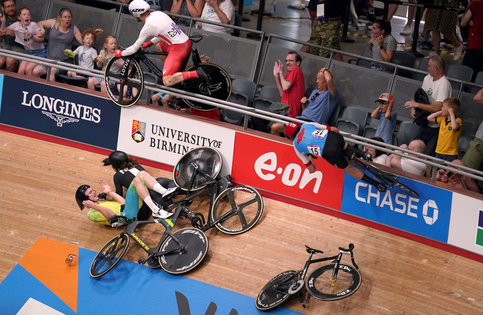

Ocurrió en los Juegos de la Commonwealth de ciclismo en pista. El británico Matt Walls esquivó una caída y salió catapultado por encima de las barreras del velódromo
“Después de un accidente en el scratch masculino, Matt Walls y Matt Bostock están siendo tratados por médicos antes de ser trasladados al hospital para recibir tratamiento adicional. Enviamos nuestros mejores deseos a los ciclistas y espectadores involucrados en el incidente”, informó el equipo de ciclismo de Inglaterra a través de un comunicado. Según detallaron algunos medios locales, el accidente se saldó con algunos espectadores heridos, entre ellos un hombre que tuvo que ser retirado ensangrentado en silla de ruedas y una niña con cortes en su brazo.
El británico Matt Walls sufrió un accidente en los Juegos de la Commonwealth de ciclismo en pista. Tras esquivar una caída, salió catapultado por encima de las barreras del velódromo y se estrelló contra la primera fila de espectadores. El hecho ocurrió en el Lee Valley Velo Park de la ciudad de Birmingham. El hecho fue filmado por los aficionados que estaban en el lugar y rápidamente se volvió viral. En el registro se pude ver el momento de la colisión, el cual se produjo durante la última vuelta de la clasificación masculina de scratch de 15 km